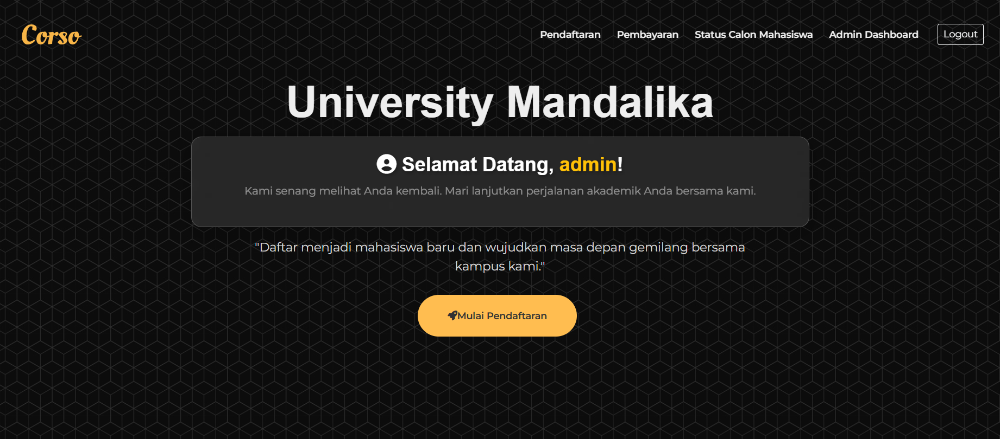
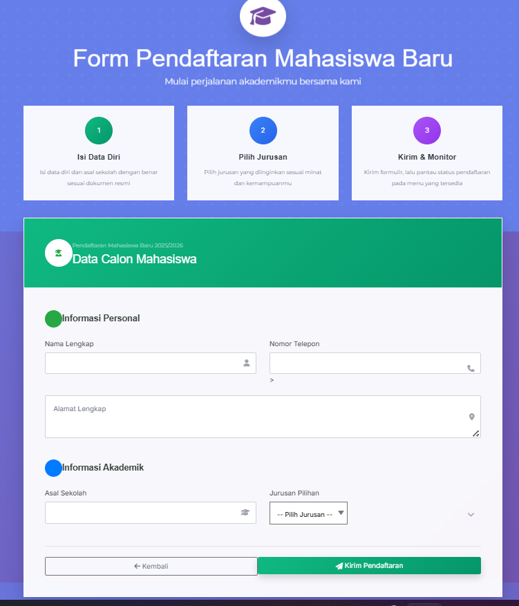
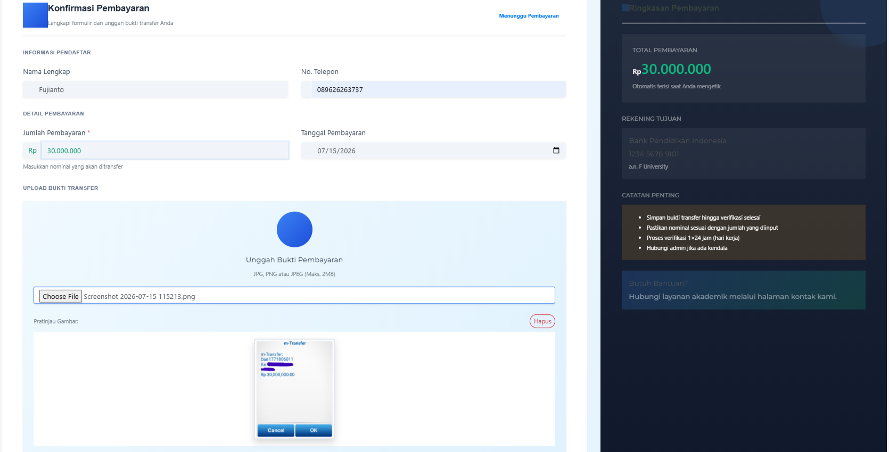
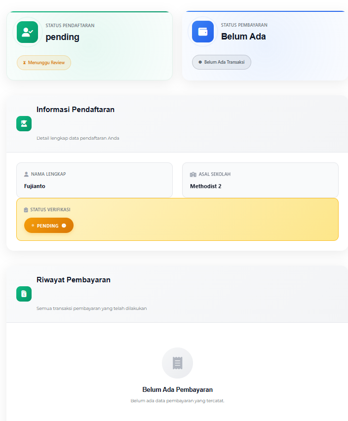
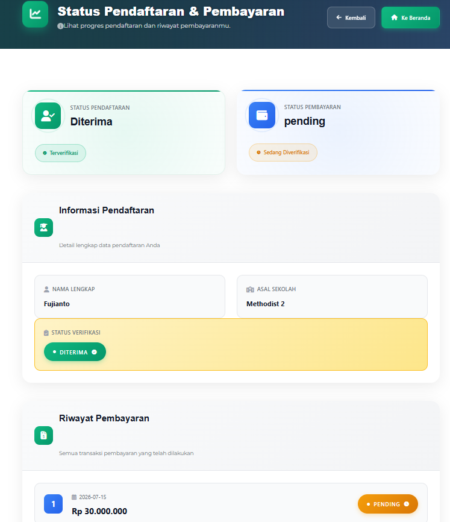
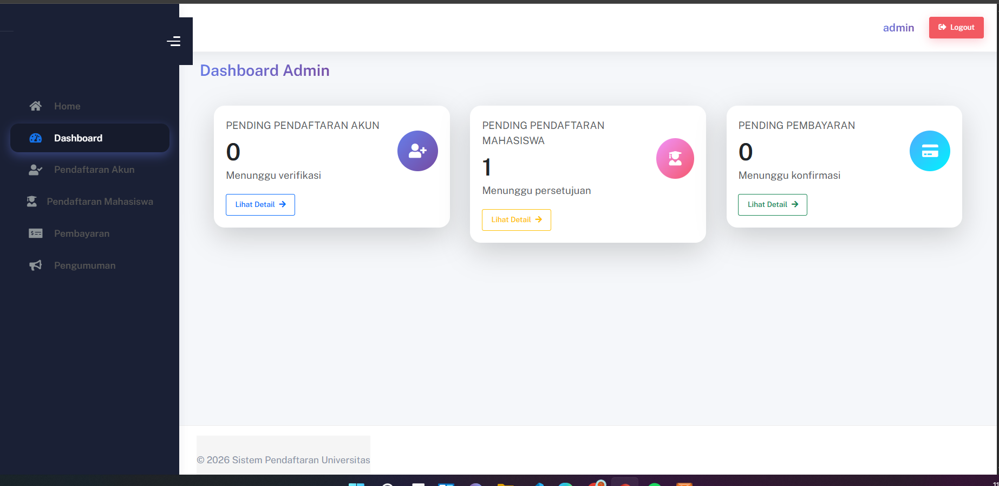

Halaman Utama Website
Halaman dashboard menampilkan identitas University Mandalika, pesan sambutan kepada admin, serta tombol "Mulai Pendaftaran" untuk mengakses proses pendaftaran mahasiswa baru.

Halaman Form Pendaftaran
Halaman ini digunakan untuk menginput data calon mahasiswa seperti identitas pribadi, program studi, dan informasi lainnya.

Halaman Pembayaran
Halaman Konfirmasi Pembayaran menampilkan formulir untuk mengunggah bukti transfer sebagai konfirmasi pembayaran biaya pendaftaran. Pengguna diminta mengisi informasi seperti nama, nomor telepon, jumlah dan tanggal pembayaran, serta mengunggah bukti transfer yang kemudian ditampilkan dalam pratinjau. Di sisi kanan terdapat ringkasan pembayaran yang berisi total biaya, informasi rekening tujuan, serta catatan penting mengenai proses verifikasi pembayaran sehingga pengguna dapat memastikan pembayaran telah dilakukan dengan benar.

Halaman Status Pendaftaran
Menampilkan informasi mengenai perkembangan proses pendaftaran mahasiswa. Pada halaman ini terlihat bahwa status pendaftaran masih pending atau menunggu proses peninjauan, sedangkan status pembayaran masih belum ada transaksi. Selain itu, ditampilkan informasi singkat mengenai data pendaftar, seperti nama lengkap dan asal sekolah, beserta status verifikasi. Di bagian bawah terdapat riwayat pembayaran yang masih kosong karena belum ada pembayaran yang tercatat, sehingga pengguna dapat memantau status pendaftaran dan pembayaran secara mudah dalam satu halaman.
Halaman Informasi Mahasiswa
Menampilkan informasi mengenai perkembangan proses pendaftaran mahasiswa. Pada halaman ini terlihat bahwa status pendaftaran telah di verifikasi berhasil, sedangkan status pembayaran masih di pending karena harus di cek ulang lagi oleh pihak kampus. Selain itu, ditampilkan informasi singkat mengenai data pendaftar, seperti nama lengkap dan asal sekolah, beserta status verifikasi. Di bagian bawah terdapat riwayat pembayaran yang telah di bayar, sehingga pengguna dapat memantau status pendaftaran dan pembayaran secara mudah dalam satu halaman.

Halaman Informasi Admin
Halaman Dashboard Admin menampilkan ringkasan informasi utama yang memudahkan administrator dalam memantau proses penerimaan mahasiswa baru. Pada halaman ini terdapat tiga kartu informasi yang menunjukkan jumlah pendaftaran akun yang menunggu verifikasi, pendaftaran mahasiswa yang menunggu persetujuan, dan konfirmasi pembayaran yang menunggu verifikasi. Setiap kartu dilengkapi tombol "Lihat Detail" untuk mengakses informasi lebih lengkap. Selain itu, di sisi kiri tersedia menu navigasi seperti Dashboard, Pendaftaran Akun, Pendaftaran Mahasiswa, Pembayaran, dan Pengumuman, sedangkan di bagian atas terdapat informasi akun admin beserta tombol Logout untuk keluar dari sistem.
Seluruh source code proyek Pendaftaran Mahasiswa dapat dilihat pada repository GitHub berikut.
🔗 Lihat Repository GitHub